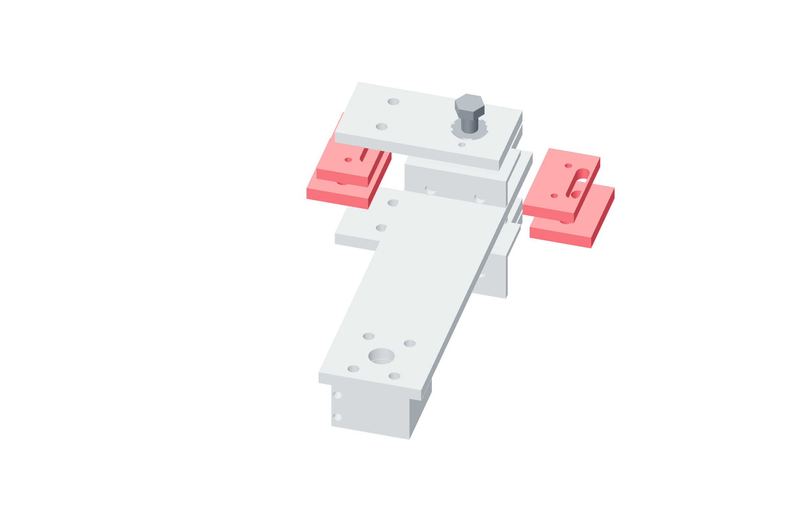

Travel / U V W86 / 179
Set the angular stop pairs
Yaw and roll switch at ±21° and stop at ±22°. Pitch switches at −21/+11° and stops at −22/+12°, outside its −20…+10° commanded range.
Add6 angular metal stops · 6 NC switches and brackets · metal fasteners
Tools / setupLever datum · rule/caliper · continuity meter

- Mark the neutral lever vector and both angular end vectors from the fabrication layout.
- Set U/W switches at ±21° and stops at ±22°. Set V switches at −21/+11° and stops at −22/+12°.
- Hand-turn each supported actuator toward each limit, metering its switch.
- Record the observed sign and clearance of all three axes at both ends.
Ready when
Every angular switch opens before metal contact; screw clevises, brake and gun envelope remain clear through yaw/roll ±20° and pitch −20…+10°. A contacting part or reversed switch order reduces the usable workspace. Correct the stop geometry and keep that path uncommanded until rechecked.